class: title-slide count: false .logo-title[] # Electrifying Large Scale Transport ### Cryogenic Power Electronics .TitleAuthor[Duleepa J Thrimawithana] --- layout: true name: template_slide .logo-slide[] .footer[[D J Thrimawithana](https://www.linkedin.com/in/duleepajt) and [Aaron Wadsworth](https://www.linkedin.com/in/aaron-wadsworth/), Department of Electrical, Computer, and Software Engineering, The University of Auckland (April 2026)] --- # The University of Auckland - Highest ranked New Zealand university and 65th in the QS World University Ranking - Over 6,000 staff members and 35,000 students - Nine faculties including Medical & Health Sciences, Engineering, Business & Economics and Science .center[] --- # Dept. of Electrical, Computer & Software Eng. .left-column[ - One of the 5 departments in the Faculty of Engineering - Offers 3 undergraduate degree programs - Electrical & Electronics, Computer Systems and Software - Project based teaching - 35+ full-time academic staff members and 15+ post-doctoral research fellows - 150+ postgraduate students and 700+ undergraduate students - Regular visiting research scholars and research students - Research groups include Power Electronics, Power Systems, Signal Processing, Robotics, Embedded Systems, Parallel Computing, Telecommunications and Control Systems ] .right-column[ ] --- # Dept. of Electrical, Computer & Software Eng. .center[<img src="img/intro/EngBuild.png" height="400">] --- # The Power Electronics Research Group .center[<img src="img/intro/PEGROUP.gif" height="430">] --- # Commercial Successes .center[<img src="img/intro/WPT_History.png" height="430">] --- class: title-slide layout: false count: false .logo-title[] # The Advanced Energy Technology Program ### An Overview --- layout: true name: template_slide .logo-slide[] .footer[[D J Thrimawithana](https://www.linkedin.com/in/duleepajt) and [Aaron Wadsworth](https://www.linkedin.com/in/aaron-wadsworth/), Department of Electrical, Computer, and Software Engineering, The University of Auckland (April 2026)] --- name: S1 # Program Overview .center[<p>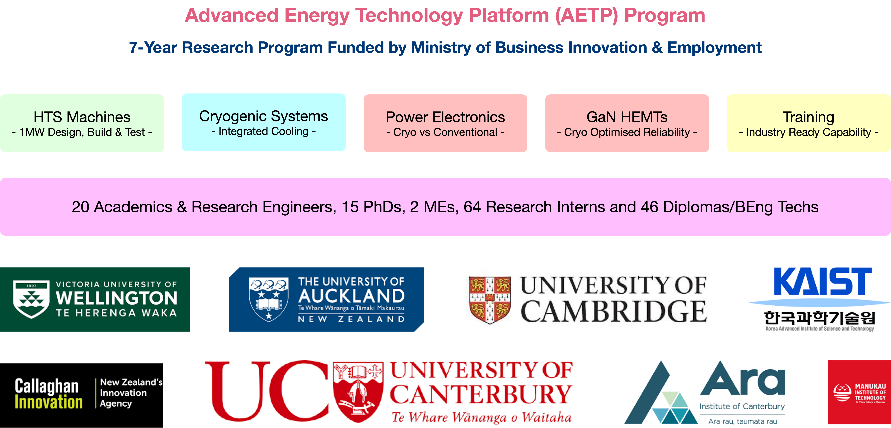</p>] --- # National and International Partners .center[<p>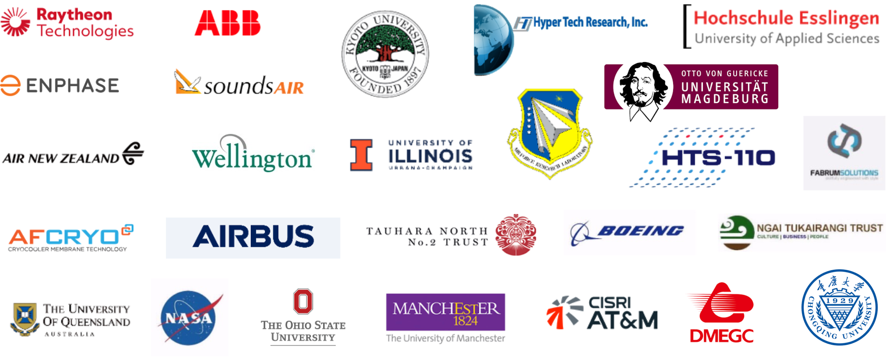</p>] --- # Power Electronics & GaN HEMTs Work Stream .center[] --- # System Overview .center[<p>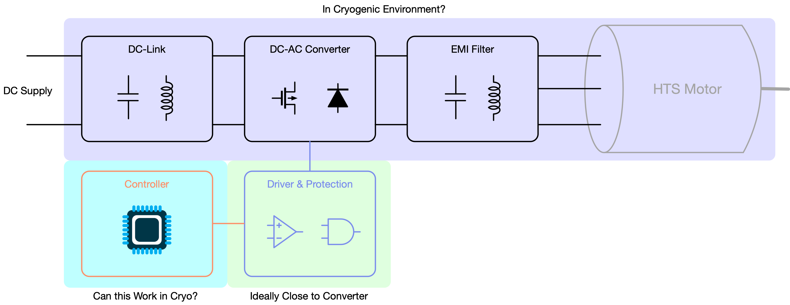</p>] --- class: title-slide layout: false count: false .logo-title[] # Switch Characterization ### Behavior Under Cryogenic Conditions --- layout: true name: template_slide .logo-slide[] .footer[[D J Thrimawithana](https://www.linkedin.com/in/duleepajt) and [Aaron Wadsworth](https://www.linkedin.com/in/aaron-wadsworth/), Department of Electrical, Computer, and Software Engineering, The University of Auckland (April 2026)] --- name: S8 # GaN HEMTs - R<sub>DS(ON)</sub> at 77K - The performance of GaN HEMTs in cryogenic temperatures depends on the gate technology - Devices with ohmic p-GaN gates do not perform well - The series Si-FET in a cascode limits improvement in R<sub>DS(ON)</sub> .center[<p>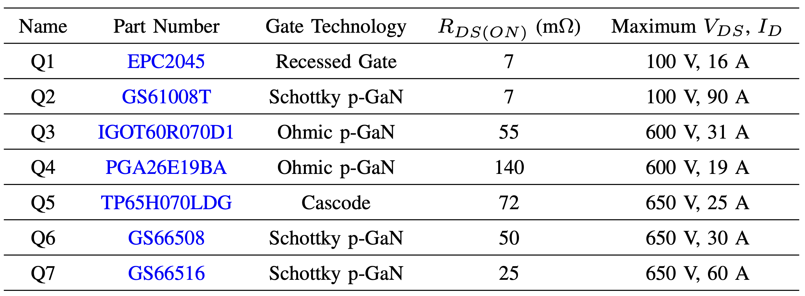</p>] --- name: S10 # GaN HEMTs - R<sub>DS(ON)</sub> Comparison .center[<p>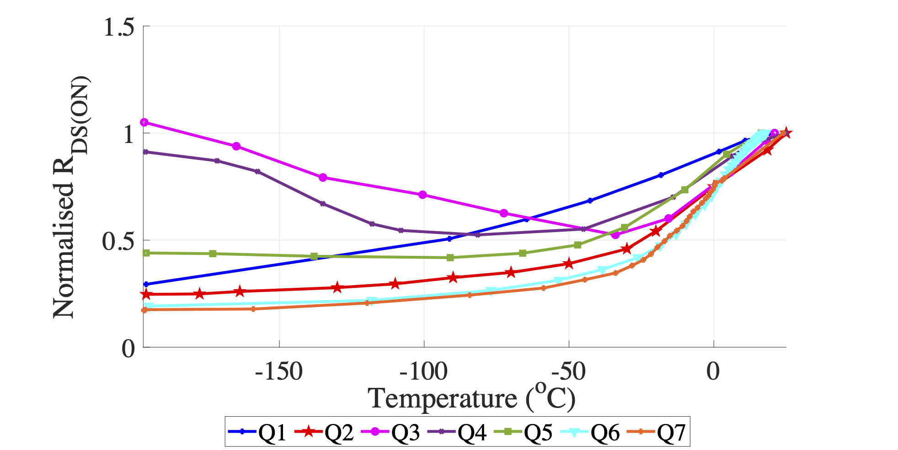</p>] --- name: S10 # GaN HEMTs - R<sub>DS(ON)</sub> Variation .center[<p>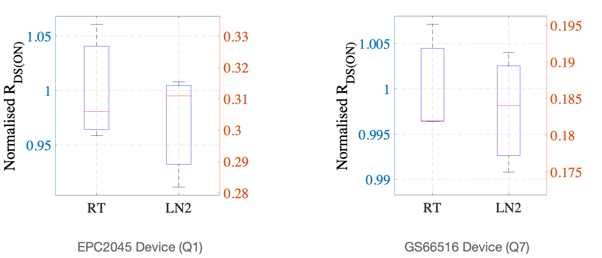</p>] --- name: S10 # GaN HEMTs - Threshold Voltage - The threshold voltage of devices with Schottky p-GaN gates reduces with temperature - In contrast the threshold voltage of cascodes and devices with ohmic p-GaN devices increases with reducing temperature .center[<p>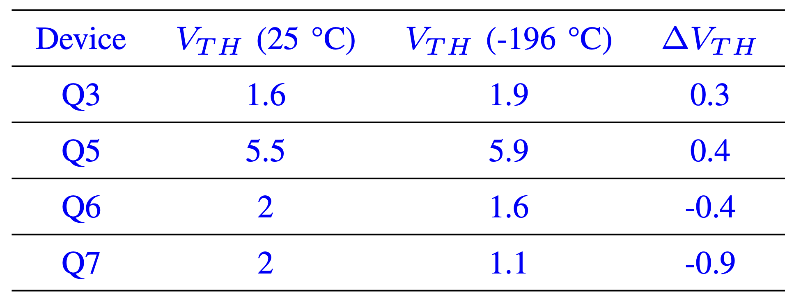</p>] --- name: S10 # GaN HEMTs - Gate Hysteresis - The gate voltage of devices with Schottky p-GaN gates exhibits hysteresis - Gate leakage current reduce at cryo temperatures .center[<p>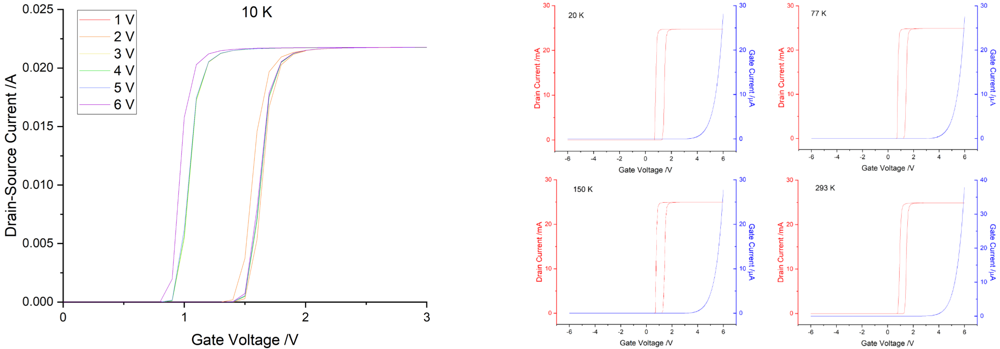</p>] --- name: S10 # GaN HEMTs - Drain Leakage Current - The leakage current while blocking seems to decrease at cryo temperatures .center[<p>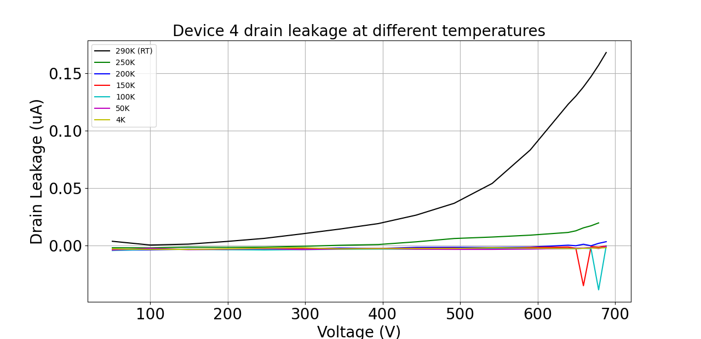</p>] --- name: S11 # Si Switches - R<sub>DS(ON)</sub> at 77K - The R<sub>DS(ON)</sub> of Si MOSFETs improve until about 120K - The R<sub>DS(ON)</sub> of Si-Superjunction MOSFETs decrease until about 120K but starts to increase quite rapidly below about 120K - The R<sub>DS(ON)</sub> of SiC devices do not deteriorate until about 220K - The effective R<sub>DS(ON)</sub> of Si IGBTs gets worse with reducing temperature .center[<p>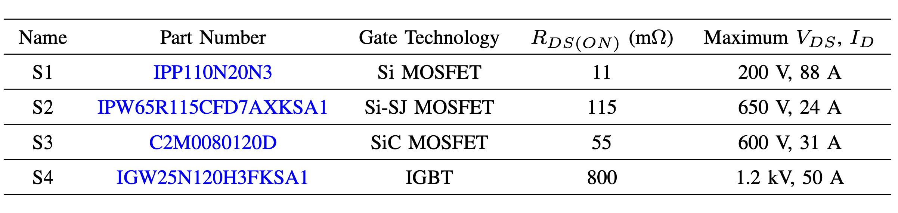</p>] --- name: S11 # Best Switches for Cryogenic Operation - Our work show that the GaN Systems HV Schottky p-GaN gate HEMTs offer the best performance to-date - Low variability between samples, reliable operation under thermal cycling, relatively easier to design cooling, better power handling, etc. - Good thermal management is still very important .center[<p>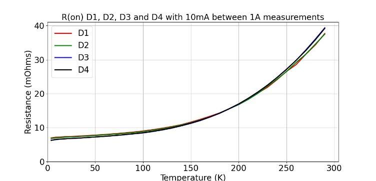</p>] --- class: title-slide layout: false count: false .logo-title[] # Magnetic Cores ### Behavior Under Cryogenic Conditions --- layout: true name: template_slide .logo-slide[] .footer[[D J Thrimawithana](https://www.linkedin.com/in/duleepajt) and [Aaron Wadsworth](https://www.linkedin.com/in/aaron-wadsworth/), Department of Electrical, Computer, and Software Engineering, The University of Auckland (April 2026)] --- name: S10 # Core Loss Measurement - Used a modified partial/full cancellation methods to extract core losses - Tested laminated steel, iron powder, ferrite and nanocrystalline cores - Tests were conducted at 295K (room temperature) and 77K (using an LN2 bath) - A power amplifier drives the test setup and C<sub>p</sub> help reduce VA requirement .center[<p>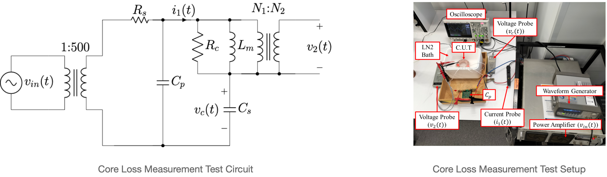</p>] --- name: S11 # Core Types - Many core types were tested to understand changes in magnetic properties at cryogenic temperatures - Notable core types tested are summarized in the table .center[<p>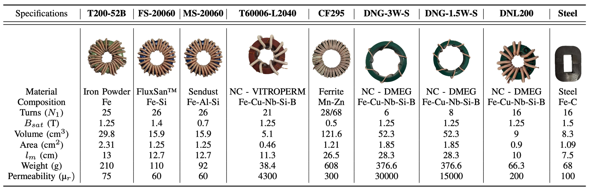</p>] --- name: S12 # Core Losses .center[<p>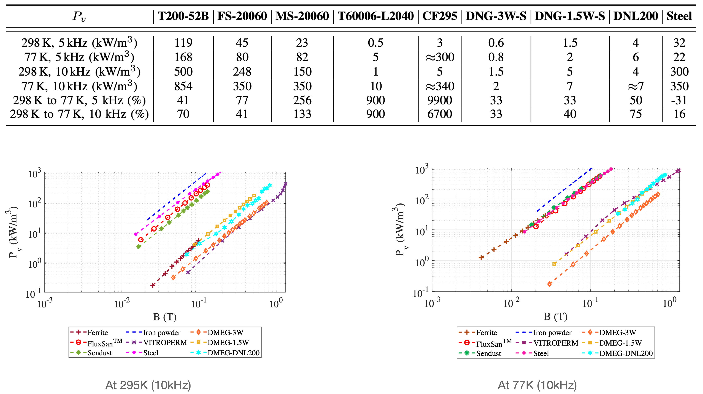</p>] --- name: S12 # Nanocrystalline Core Comparison (PI) - Not all nanocrystalline core types behaves the same - Introducing an air-gap in the core increases core loss - Production technique and core structure has a significant impact .center[<p>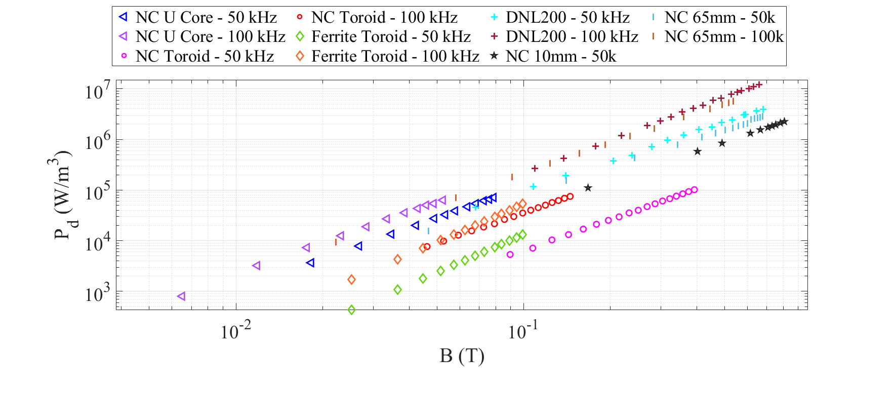</p>] --- name: S12 # Nanocrystalline Core Comparison (PII) - U cores have significantly higher losses in comparison to toroidal cores - In toroidal cores, the size and the production technique impacts the losses - Stress annealed cores perform the best - Crushed nanocrystalline cores have slightly higher losses in comparison to stress annealed cores - Core height increases the losses due to increased eddy current effects .center[<p>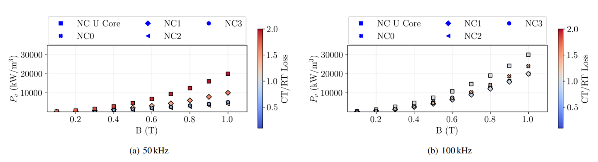</p>] --- name: S12 # Improved Magnetics - Shorter toroidal cores can be stacked with an air-gaps between them to reduce eddy current losses .center[<p>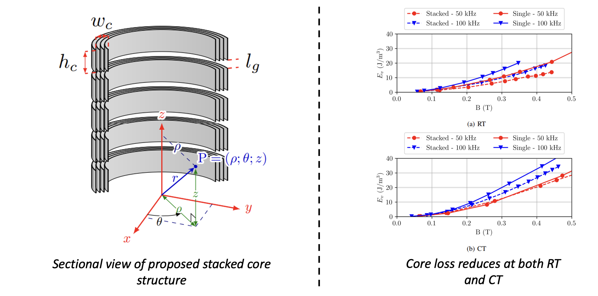</p>] --- name: S19 # Evolution of Magnetic Designs .center[<p>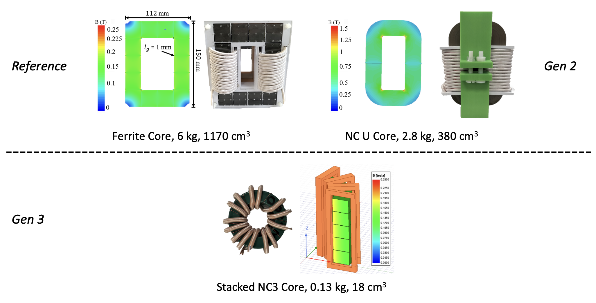</p>] --- class: title-slide layout: false count: false .logo-title[] # A GaN Based Cryogenic Converter ### The Design and Performance --- layout: true name: template_slide .logo-slide[] .footer[[D J Thrimawithana](https://www.linkedin.com/in/duleepajt) and [Aaron Wadsworth](https://www.linkedin.com/in/aaron-wadsworth/), Department of Electrical, Computer, and Software Engineering, The University of Auckland (April 2026)] --- name: S19 # A Cryogenic Converter - A GaN based synchronous buck converter that can operate in cryogenic temperatures has been built - All components except the controller were operated at cryogenic temperatures - Helps identify advantages and drawbacks of operating at cryogenic temperatures - Compared with operation at 295K including a loss breakdown .center[<p>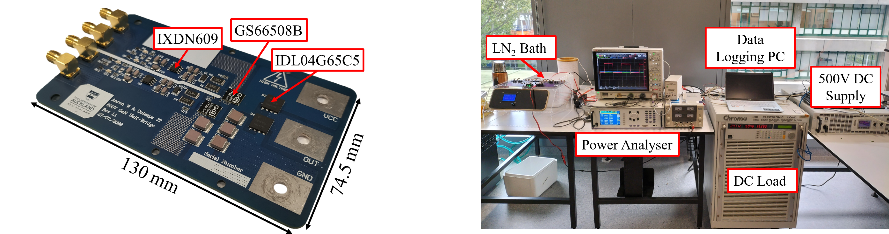</p>] --- name: S19 # Testing in a Synchronous Buck Configuration .center[<p>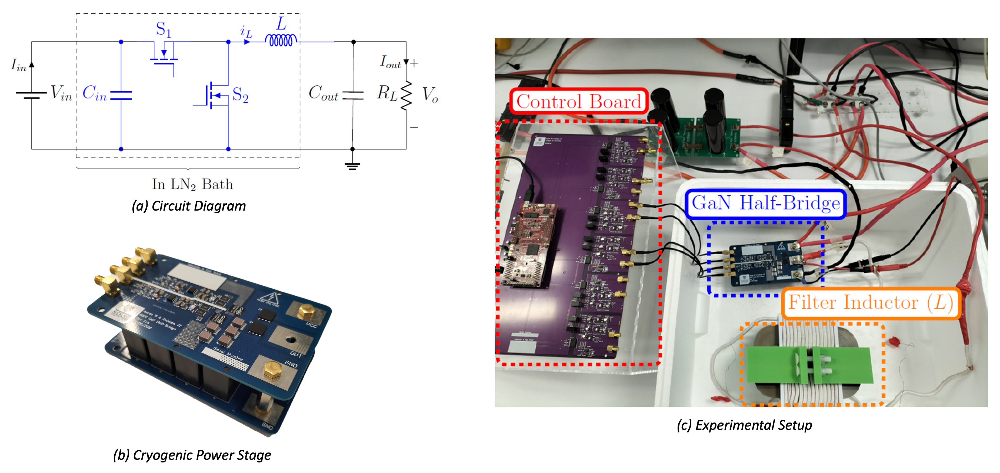</p>] --- name: S19 # Converter with Gen 2 Magnetics - Experiments considered nanocrystalline inductor operation in 77K and 295K - This enabled comparison with a ferrite inductor that operated at 295K - As expected the nanocrystalline inductor leads to slightly lower efficiency - However, it allows over 70% reduction in weight .center[<p>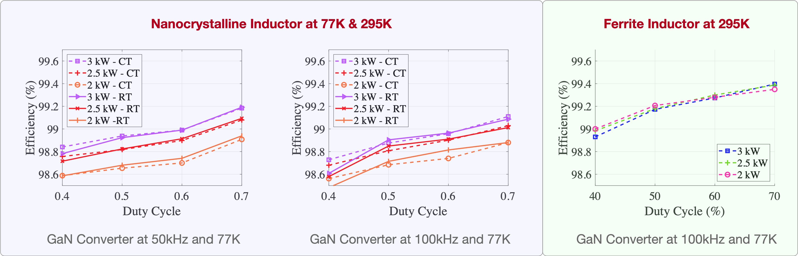</p>] --- name: S19 # Loss Breakdown - An air-core inductor is used to extract switch losses and compare - A significant improvement in switch loss is observed at 77K - Though a ferrite core inductor is more efficient there is a significant weight penalty - The Gen 2 nanocrystalline core allows over 70% reduction in weight .center[<p>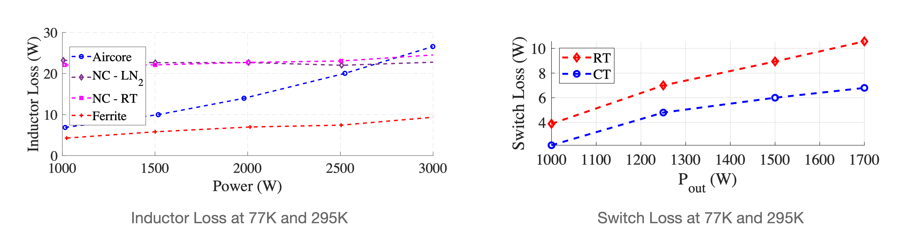</p>] --- name: S19 # Converter with Gen 3 Magnetics - The Gen 3 magnetic design with stacked stress annealed NC cores offers similar performance to the ferrite core inductor - However the Gen 3 design is 2% of the volume and weight of a traditional ferrite core inductor - In this 3 kW converter, the Gen 3 inductor was only 130 g, thus providing a viable scalable design for cryogenic magnetics .center[<p>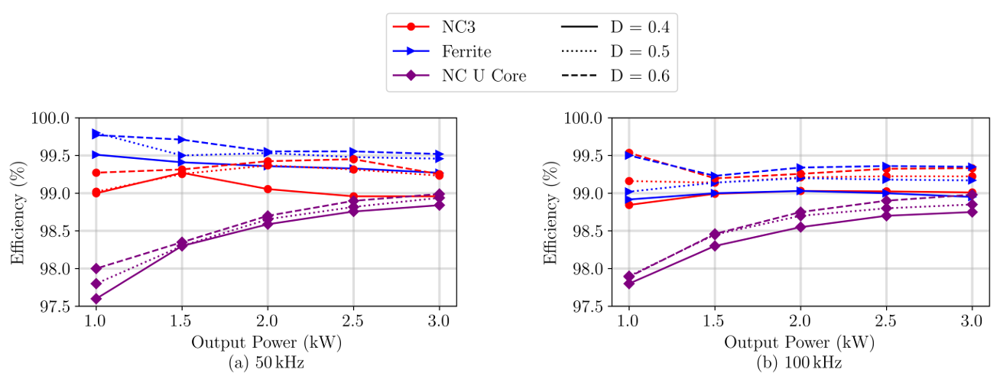</p>] --- name: S19 # Demonstration .center[<iframe width="745" height="420" src="demo.mp4" frameborder="50" allow="encrypted-media" allowfullscreen></iframe>] --- name: S19 # Cryoconverter Comparison .center[<p>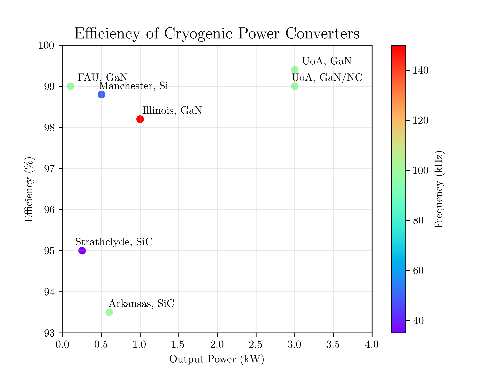</p>] --- name: S19 # Operation Down to 40K - The GaN based synchronous buck converter has been tested down to 40K - Need significant improvements to the design to effectively operate in a vacuum .center[<iframe width="620" height="350" src="CryoChamber.mp4" frameborder="50" allow="encrypted-media" allowfullscreen></iframe>] --- name: S19 # 2-Level Three-Phase Inverter - The GaN converter that was validated has been extended to form a 2-level three-phase inverter - Tested at 6 kVA and aim to re-test at 9 kVA .center[<p>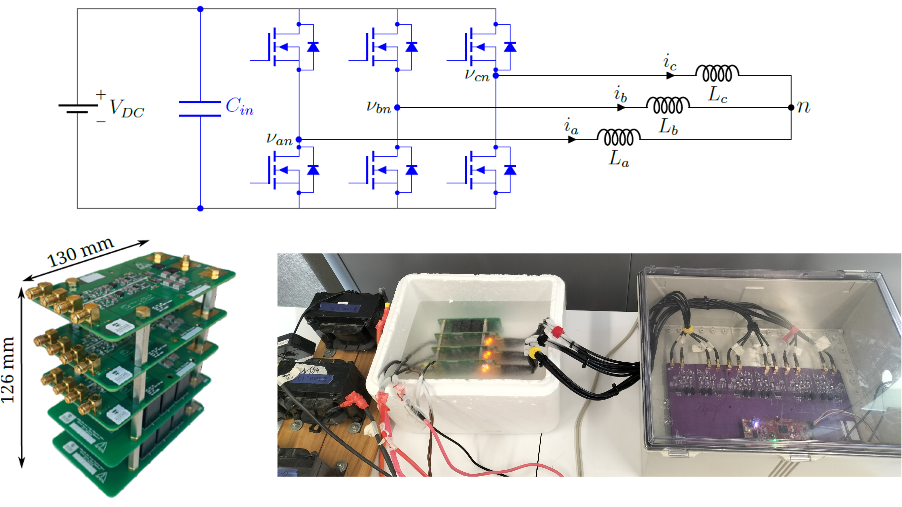</p>] --- name: S19 # Driving a Homopolar Machine with HTS Field Winding - A homopolar machine with an HTS field winding has been driven using the 2-level three-phase inverter - Inverter was in LN2 while the motor was inside a vacuum chamber cooled using a cold head .center[<iframe width="620" height="350" src="HTS_Motor.mp4" frameborder="50" allow="encrypted-media" allowfullscreen></iframe>] --- class: title-slide layout: false count: false .logo-title[] # Ancilary Circuits ### Characterization and Development of Ancilary Circuits --- layout: true name: template_slide .logo-slide[] .footer[[D J Thrimawithana](https://www.linkedin.com/in/duleepajt) and [Aaron Wadsworth](https://www.linkedin.com/in/aaron-wadsworth/), Department of Electrical, Computer, and Software Engineering, The University of Auckland (April 2026)] --- name: S8 # Passives and ICs - Designing a power electronics systems require all subsystems (e.g., control, feedback, ancillary sources, etc.)to be operated under cryogenic conditions - Components required include MCUs, FPGAs, low voltage capacitors, linear regulators, OpAmps, etc. - Prototypes of all the critical subsystems needed to build a power electronics system that can operate under cryogenic conditions have been developed and tested - Currently working on miniaturizing the designs and improving the performance of the subsystems .center[<p>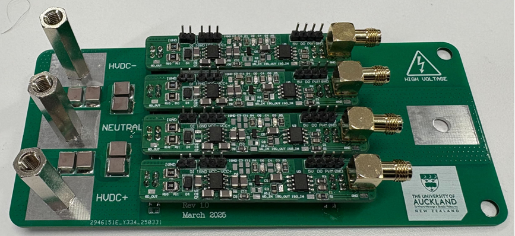</p>] --- name: S10 # Current Sensors - Hall effect and TMR current sensor ICs have been tested to identify best option for an isolated current sensor - All sensors seem to work with varying performance - So far the TI TMSC1101 seems to demonstrate the best accuracy, linearity and temperature dependency - TMR sensors also works well with goof linearity and small change in sensitivity .center[<p>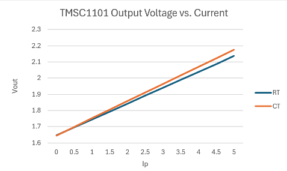</p>] --- name: S10 # Digital Isolators - Optical, RF, capacitive and magnetic based digital isolators have been tested - Si863x from Silicon Labs works but power consumption increases dramatically - STISO62x from STM does not work - ISO672x from Ti does not perform well - From these testing it was determined that the Analog Devices ADuM121 works well - The rising and falling edge propagation delays reduce from 10ns to 6ns when cooled to 77K .center[<p>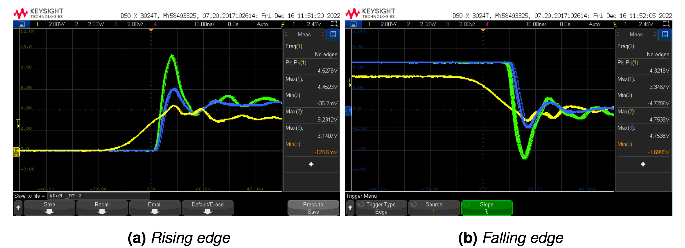</p>] --- name: S10 # OpAmps and Comparators - A number of CMOS OpAmps and comparators were tested - OpAmps tested were TLV272, MCP6292, MAX4233, ADA4891, OPA356, OPA355 and LTC6244 - Comparators tested were TLV3502, MCP6567 and MAX9140 - OpAmps MCP6292, MAX4233, ADA4891 and LTC6244 worked at 77K - OpAmps OPA356 and OPA355 need further testing - Comparators that worked are TLV3502 and MAX9140 .center[<p>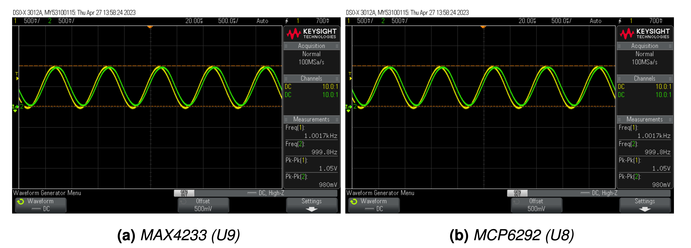</p>] --- name: S10 # Voltage References, regulators and Zener Diodes - None of the voltage references or regulators including fully CMOS based designs, tested works under cryogenic conditions - Zener diodes work, and ~4.7V zeners show relatively small change Vz when operated at 77K - Zener diodes below Vz of about 5V show an increase in Vz when operated at 77K - Zener diodes over Vz of about 5V show a decrease in Vz when operated at 77K .center[<p>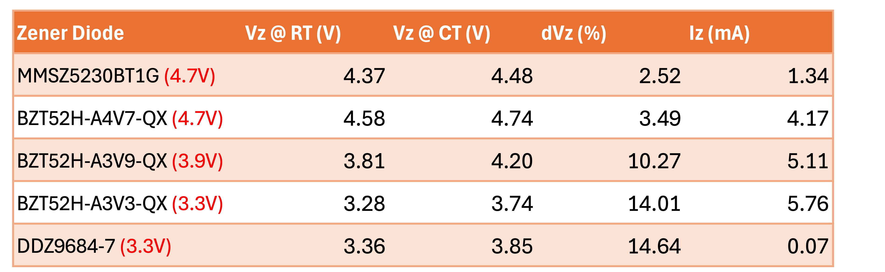</p>] --- name: S10 # Capacitors - Previous works shows that NP0 ceramic capacitors and most film capacitors perform well under cryogenic conditions - However, both these types tend to have very poor energy densities and thus we need alternative low voltage bulk capacitors - Tantalum, Tantalum Polymer and Aluminum Polymer capacitors have been tested as alternatives - Aluminum Electrolytic capacitors do not work under cryogenic conditions .center[<p>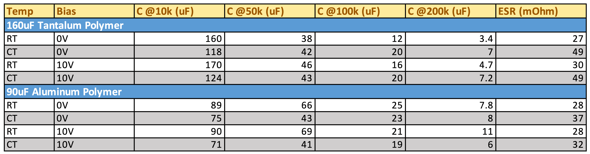</p>] --- name: S10 # Custom Built Linear Regulator - Due to poor performance of off the shelf options, a linear regulator was designed and built using discrete components - A simple topology with current limiting, that performs well under both RT and CT generating 5V - Overshoot/undershoot less than 50mV during load cycling, ripple less than 1mV - Cheap BOM cost and small size (20mm x 15mm) .center[<p>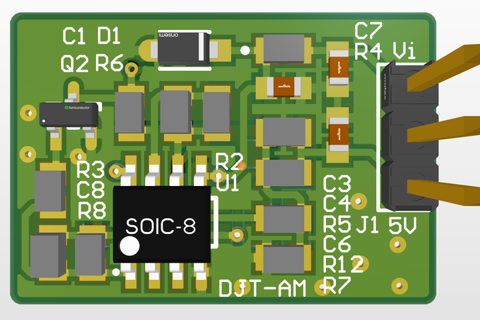</p>] --- name: S10 # Custom Built Resonant Switchers - Off the shelf isolated ancillary power supplies do not work under cryogenic conditions - Needed for house keeping tasks like providing power to gate drivers and isolated sensors - 2 designs have been completed for an isolate 1.5W ancillary source that can produce + and - outputs .center[<img src="img/ancilary/Resonant_AirCore.png" height="300px"> <img src="img/ancilary/Resonant_Core.png" height="300px">] --- name: S11 # MCUs and FPGAs - We have tested a number of MCUs and FPGAs/CPLDs in cryogenic operation - An RP2040 based motor controller firmware has been developed and tested - Further testing to continue with custom developed boards for future power converter designs .center[<p>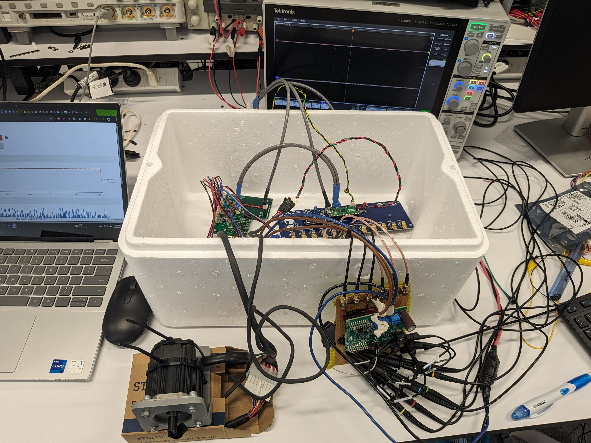</p>] --- name: S11 # LHe 4.5K Testing - Continuing LHe testing to investigate how a GaN based power converter behaves down to 4K - A Synchronous Buck converter has been designed that measured 1.5cm x 14.5cm - Initial testing shows the driver design is functional down to 4K .center[<p>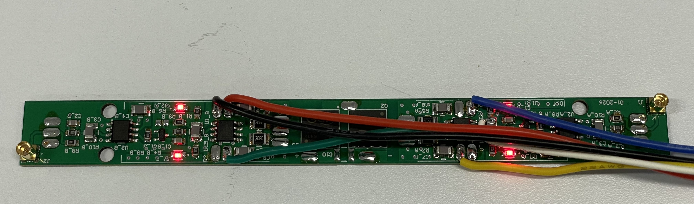</p>] --- class: title-slide layout: false count: false .logo-title[] # GaN HEMTs for Cryogenic Operation ### Characterization and Optimization --- layout: true name: template_slide .logo-slide[] .footer[[D J Thrimawithana](https://www.linkedin.com/in/duleepajt) and [Aaron Wadsworth](https://www.linkedin.com/in/aaron-wadsworth/), Department of Electrical, Computer, and Software Engineering, The University of Auckland (April 2026)] --- name: S19 # Impact of Thermal Cycling - Samples with pre-existing surface features were cycled between 340K to 80K - Atomic force microscopy used to look for evidence of heterostructure degradation - Proportion of sample area which is occupied by fissures (averaged over 5 scans) used as a metric - This was measured using FIJI, by segmenting the atomic force microscopy images - No significant change which suggests repeated thermal cycling does not damage the heterostructure .center[<p>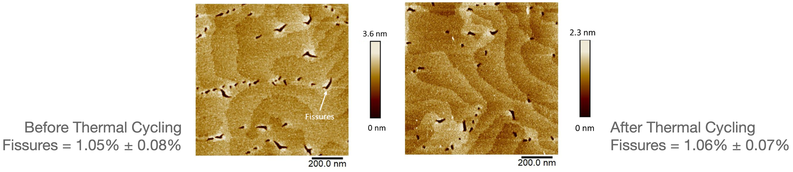</p>] --- name: S19 # Annealing to Help Ohmic Contacts - The behavior of contacts to p-GaNs have been investigated at cryogenic temperatures - Findings show Schottky behavior at cryogenic temperatures for both indium contacts and Ni-Au processed contacts - Annealing at higher temperatures for longer seems to help .center[<p>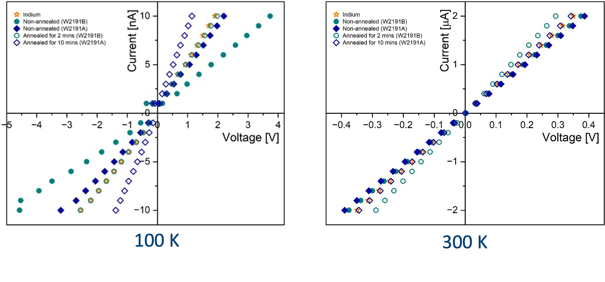</p>] --- class: title-slide layout: false count: false .logo-title[] # HTS Busbars and Flux Pumps ### Driving HTS Magnets --- layout: true name: template_slide .logo-slide[] .footer[[D J Thrimawithana](https://www.linkedin.com/in/duleepajt), Department of Electrical, Computer, and Software Engineering, The University of Auckland (January 2026)] --- # Testing Low Voltage Switches - There is not much research on the performace of low voltage Si FETs and GaN HEMTs under cryogenic conditions - Tests were performed on the lowest R<sub>on</sub> low-voltage Si FETs and GaN HEMTs - Si FETs are better for temperatures above ~40K as there are devices with very low on resistance - IQDH29NE2LM has an R<sub>on</sub> of about 300 uOhms - After about 40K, due to carrier freezeout in Si FETs, GaN HEMTs starts becoming better .center[<p>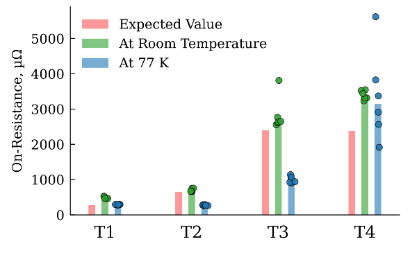</p>] --- # Resistance of Cu Traces/Interconnects - The contribution of the solder joints and PCB traces to overall D-S resistance have been investigated - A 2 Oz PCB contributes rougly 200 uOhms at RT and 22 uOhms at CT - Contribution of solder joints and trace resistance is however significant for smaller devices, specially GaNs .center[<p>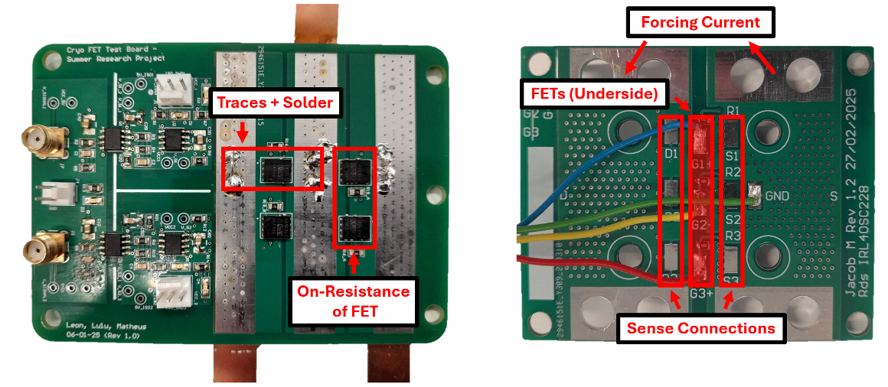</p>] --- # HTS Busbars - An ultra-low Rds on Si FET was directly bonded to an HTS tape to investigate benefits of HTS as traces in high-power cicruits - This was compared against a setup with copper tape quantify the benefits and drawbacks of using HTS tape - Voltage drop across the FET and 50mm section of the bus was measured using a nano-volt meter .center[<p>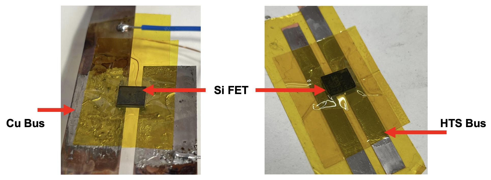</p>] --- # Solid State Flux Pump with Aircore Transformer - A 200A solid-state flux pump was developed to measure the critical current of an HTS tape - 8 ultra-low Rds on Si FET was used to rectify while keeping the losses low .center[<img src="img/fluxpump/CurrentDoubler.jpg" height="300px"> <img src="img/fluxpump/CurrentDoubler_2.png" height="300px">] --- class: title-slide layout: false count: false .logo-title[] # Ongoing Work ### Planned Research Activities and Research Challenges --- layout: true name: template_slide .logo-slide[] .footer[[D J Thrimawithana](https://www.linkedin.com/in/duleepajt) and [Aaron Wadsworth](https://www.linkedin.com/in/aaron-wadsworth/), Department of Electrical, Computer, and Software Engineering, The University of Auckland (April 2026)] --- name: S19 # T-Type Converters for Motor Drives - Previosuly we have successfully built and tested synchronous Buck and 2-level converters using GaNs - Among the most dense and efficient reported to-date - To help further reduce losses in the HTS motor, next phase looks at multi-level designs - A comparative study was conducted to show that a T-Type converter offers best performance-complexity trade-offs .center[<p>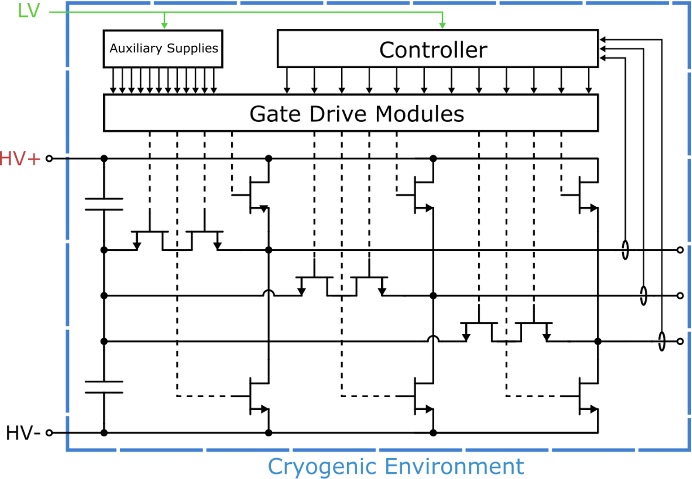</p> <p>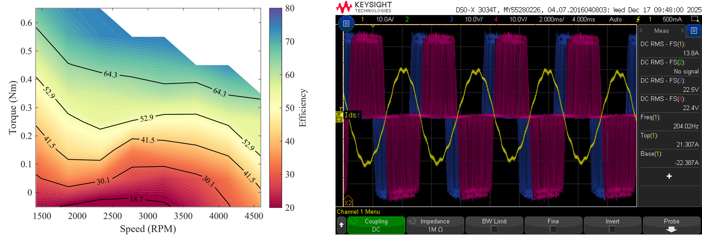</p>] --- name: S19 # Testing with Axial Flux Machine - The T-Type converter operated at 77K was confirgured to drive an axial flux machine - Initial testing upto 250V completed - First fully cryogenic motor drive reported to-date - All ancillary circuits and digital controller operated in the cryogenic enviroment .center[<img src="img/t-type/All_Cryo_1.jpg" height="300px"> <p>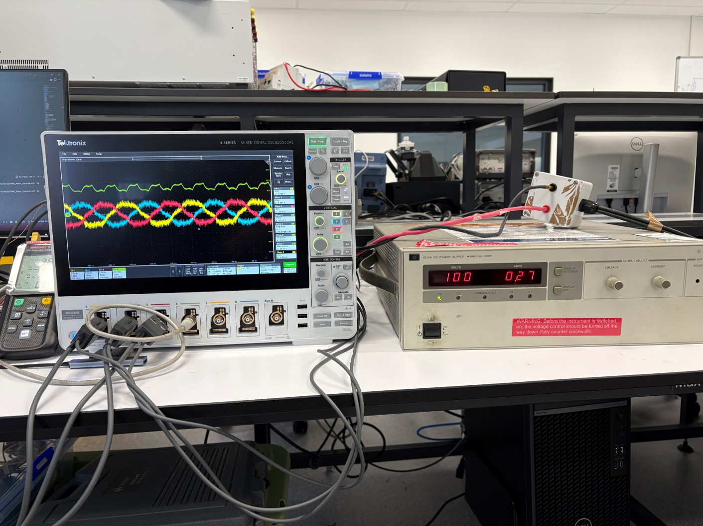</p>] --- name: S19 # A Benchmark System - A liquid cooled, SiC based benchmark setup is under development to drive a 1MW HTS machine - Custom designed fully superconducting machine and cooling is currently been developed by work streams lead by the Victoria University and Callaghan Innovations .center[<p>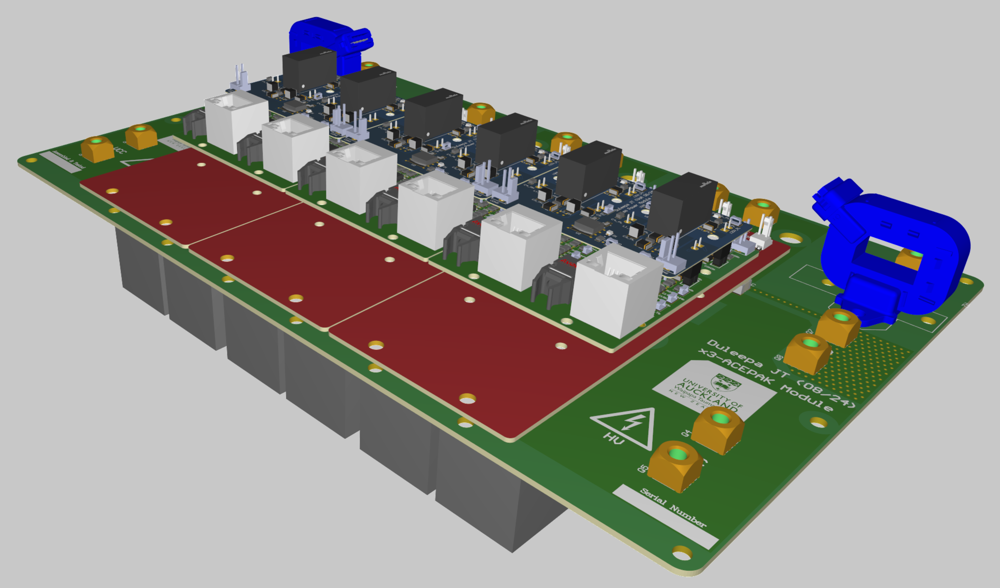</p>] --- name: S19 # Dynamic R<sub>DS(ON)</sub> at Cryo Temperatures - Measurement circuitry has been developed to capture the dynamic R<sub>DS(ON)</sub> under cryo temperatures - Designed to have a delay of less than 1 µs - The measurement circuitry can be operated under cryogenic conditions - Allows trapping at a constant voltage and de-trapping at a constant current - V<sub>DS(ON)</sub> is sampled regularly to track the change in dynamic R<sub>DS(ON)</sub> with time - Based on our findings a measurement protocol has been developed .center[<p>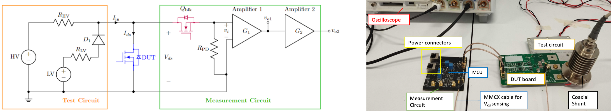</p>] --- name: S19 # Dynamic R<sub>DS(ON)</sub> Measurements - The measured dynamic R<sub>DS(ON)</sub> changes as the sampling period is varied - As the device needs to be stressed for over 1000s, we needed to adjust sampling rate to manage data - However, this seemed to impact the measurement specially when hard switching - The measurement protocol takes samples at regular intervals to avoid this issue .center[<p>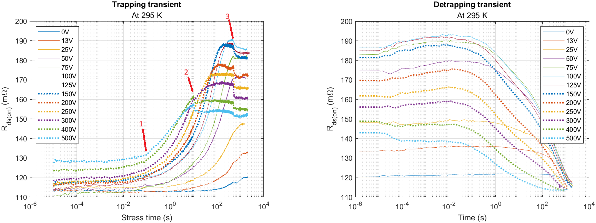</p>] --- name: S19 # Conclusions and Observations - Cryoelectronics is in-demand for applications such as aviation, space exploration, nuclear fusion, future circular collider, etc. - Long haul commercial flights will most likely require LH2 as a fuel - Has sufficient thermal capacity to cool the electronics - Developing a cryoelectronic converter seems possible with current device technology - GaN device with Schottky p-GaN gates seems to be the most promising switching technology - CMOS logic devices works well in cryogenic temperatures - Nanocrystalline materials offer good performance - Film capacitors and NP0/C0G capacitors works well - Operating at lower temperature offers some advantages - Improved power density, possible higher efficiency and less heat leakage --- name: S19 # Research Challenges - Fully cryogenic power conversion system - We are in the process of developing a new generation of our GaN HEMT based power conversion modules, with integrated isolation, protection, ancillary services and digital control - Conduction cooling the converters - We are investigating new designs that enable conduction cooling for a power conversion system in a vacuum chamber using a cold head - Reliability of components and further component characterization - Further investigation on failure modes, cold starts, impact of thermal cycling, thermal shock, thermal gradients, mechanical stresses introduced by encapsulating materials, etc. - Radiation hardness of cryo-cooled GaN HEMTs (possible collaboration with Airbus and STM) - Driving a fully HTS machine - Challenges involved in minimizing AC losses, insulation breakdown, low winding inductance, EMI, etc. - We are investigating some novel approaches to solve some of these issues --- class: title-slide layout: false count: false .logo-title[] # Thank You